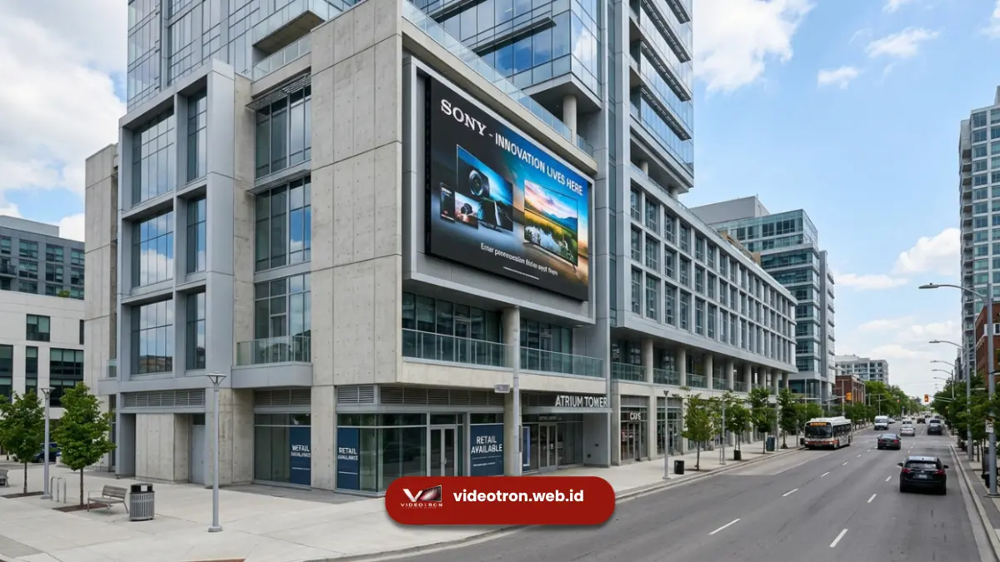

Harga videotron ditentukan oleh pixel pitch, tipe LED (SMD atau COB), material kabinet, brand controller, tingkat kecerahan, garansi, dan biaya instalasi. Kombinasi tujuh faktor ini membuat harga videotron per meter persegi bisa berbeda jauh antar vendor.
Poin Kunci yang Perlu Diketahui:
- Pixel pitch adalah faktor paling dominan; semakin rapat jarak antar piksel, semakin mahal harganya.
- Tipe LED SMD dan COB memiliki struktur biaya produksi yang berbeda.
- Material kabinet (besi, aluminium die-cast) memengaruhi daya tahan sekaligus harga jual.
- Brand controller dan sending card menentukan stabilitas gambar sekaligus nilai investasi jangka panjang.
- Garansi dan layanan purnajual menjadi komponen biaya tersembunyi yang sering diabaikan pembeli.
- 1. Apa Itu Videotron dan Mengapa Harganya Bervariasi?
- 2. Pixel Pitch, Penentu Harga Paling Signifikan
- 3. Tipe LED, SMD atau COB, Apa Bedanya pada Harga?
- 4. Bagaimana Material Kabinet Videotron Memengaruhi Harga?
- 5. Brand Controller dan Sending Card
- 6. Tingkat Kecerahan dan Kebutuhan Lokasi Instalasi
- 7. Apakah Garansi Memengaruhi Harga Videotron?
- 8. Biaya Instalasi dan Struktur Pendukung
- 9. Kesimpulan dan Konsultasi Gratis
Apa Itu Videotron dan Mengapa Harganya Bervariasi?
Videotron adalah layar LED berukuran besar yang disusun dari modul-modul kecil untuk menampilkan gambar, video, atau teks secara digital. Harganya bervariasi karena setiap proyek memiliki kombinasi spesifikasi teknis yang berbeda.
Videotron digunakan untuk kebutuhan iklan luar ruang, backdrop panggung, informasi publik, hingga signage gedung komersial. Karena fungsinya beragam, spesifikasi yang dibutuhkan pun berbeda-beda, dan inilah yang membuat harga akhir tidak bisa disamaratakan antar proyek.
Secara umum, harga videotron dipengaruhi oleh kebutuhan teknis (resolusi, kecerahan, ketahanan cuaca) dan kebutuhan non-teknis (lokasi instalasi, aksesibilitas, kompleksitas struktur pendukung). Memahami kedua kelompok faktor ini membantu pembeli menilai kewajaran suatu penawaran harga.
Pixel Pitch, Penentu Harga Paling Signifikan
Pixel pitch, yaitu jarak antar titik LED dalam satuan milimeter, adalah faktor yang paling besar pengaruhnya terhadap harga videotron karena menentukan jumlah titik LED per meter persegi.
Semakin kecil angka pixel pitch, semakin banyak titik LED yang dibutuhkan dalam satu meter persegi, sehingga biaya komponen dan proses produksi ikut meningkat.
Videotron dengan pixel pitch P2 misalnya membutuhkan jauh lebih banyak titik LED dibandingkan P10 pada luas area yang sama.
Pemilihan pixel pitch idealnya disesuaikan dengan jarak pandang audiens. Videotron indoor dengan jarak tonton dekat umumnya memakai pixel pitch kecil agar gambar tetap tajam.
Sementara videotron outdoor dengan jarak tonton jauh dapat menggunakan pixel pitch lebih besar tanpa mengurangi kualitas visual yang dirasakan penonton. Untuk penjelasan mendalam mengenai rumus perhitungan jarak pandang, Anda dapat membaca panduan memilih pixel pitch berdasarkan jarak pandang.
Tipe LED, SMD atau COB, Apa Bedanya pada Harga?
Tipe LED SMD dan COB memengaruhi harga videotron karena keduanya memiliki proses produksi, ketahanan, dan performa optik yang berbeda meski tampilan visualnya bisa terlihat mirip dari kejauhan.
LED SMD (Surface Mounted Device) merupakan teknologi yang lebih umum digunakan dan tersedia dalam rentang harga yang lebih luas.
LED COB (Chip on Board) hadir belakangan dengan klaim ketahanan lebih baik terhadap benturan dan kelembapan karena chip LED tertanam langsung pada papan sirkuit, namun umumnya dibanderol pada level harga yang lebih tinggi.
Pemilihan tipe LED sebaiknya mempertimbangkan lokasi pemasangan. Area dengan lalu lintas tinggi atau risiko benturan fisik dapat mempertimbangkan COB, sementara SMD tetap menjadi pilihan yang efisien untuk kebutuhan umum dengan anggaran lebih kontrol.
Bagaimana Material Kabinet Videotron Memengaruhi Harga?
Material kabinet videotron, baik besi maupun aluminium die-cast, memengaruhi harga karena berkaitan langsung dengan bobot, daya tahan terhadap cuaca, dan kemudahan proses instalasi maupun perawatan.
Kabinet berbahan besi umumnya lebih terjangkau namun memiliki bobot lebih berat dan ketahanan korosi yang lebih rendah dibandingkan aluminium die-cast.
Kabinet aluminium die-cast menawarkan bobot lebih ringan, presisi sambungan antar modul yang lebih rapat, serta ketahanan cuaca yang lebih baik untuk instalasi outdoor jangka panjang.
Selain jenis material, ketebalan dan sistem pengunci kabinet turut memengaruhi harga karena berkaitan dengan kemudahan proses maintenance saat modul perlu diganti atau diperbaiki di kemudian hari.
Brand Controller dan Sending Card
Brand controller dan sending card memengaruhi harga videotron karena komponen ini bertugas mengatur sinkronisasi gambar, stabilitas refresh rate, dan kompatibilitas dengan berbagai sumber konten.
Controller dengan reputasi baik di industri umumnya menawarkan stabilitas sinyal yang lebih konsisten, dukungan resolusi yang lebih tinggi, serta kompatibilitas software yang lebih luas.
Videotron dengan controller berkualitas rendah berisiko mengalami flicker, delay, atau ketidaksesuaian warna, meskipun modul LED yang digunakan sebenarnya berkualitas baik.
Karena controller adalah otak dari sistem videotron, banyak vendor profesional menyarankan agar pembeli tidak hanya berfokus pada harga modul LED, tetapi juga memastikan kualitas controller yang digunakan dalam paket penawaran.
Tingkat Kecerahan dan Kebutuhan Lokasi Instalasi
Tingkat kecerahan (brightness) videotron memengaruhi harga karena videotron dengan brightness tinggi membutuhkan komponen LED dan power supply dengan spesifikasi yang lebih besar.
Videotron outdoor umumnya memerlukan tingkat kecerahan yang jauh lebih tinggi dibandingkan videotron indoor agar gambar tetap terlihat jelas di bawah sinar matahari langsung. Kebutuhan brightness yang lebih tinggi ini berdampak pada pemilihan chip LED, driver IC, hingga kapasitas power supply, yang semuanya berkontribusi pada kenaikan harga.
Sebaliknya, videotron indoor dengan pencahayaan ruangan yang lebih terkontrol dapat menggunakan tingkat kecerahan lebih rendah, sehingga komponen yang dibutuhkan pun bisa lebih hemat biaya.
Apakah Garansi Memengaruhi Harga Videotron?
Ya, garansi memengaruhi harga videotron karena masa garansi yang lebih panjang biasanya mencerminkan kualitas komponen yang lebih baik serta komitmen layanan purnajual dari vendor.
Vendor yang menawarkan garansi lebih panjang umumnya telah melakukan quality control lebih ketat pada modul, power supply, dan controller sebelum produk dikirim ke pelanggan.
Biaya tambahan pada garansi panjang sering kali sepadan dengan berkurangnya risiko biaya perbaikan mendadak di kemudian hari.
Pembeli disarankan menanyakan secara rinci apa saja yang dicakup dalam garansi, termasuk komponen mana saja yang termasuk dan tidak termasuk, agar tidak terjadi kesalahpahaman saat videotron memerlukan perbaikan.
Biaya Instalasi dan Struktur Pendukung
Biaya instalasi dan struktur pendukung memengaruhi total harga videotron karena setiap lokasi memiliki kebutuhan rangka, pengkabelan, dan aksesibilitas yang berbeda-beda.
Instalasi pada gedung tinggi atau area dengan akses terbatas umumnya membutuhkan biaya tambahan untuk rangka penyangga khusus, sistem keamanan kerja, serta waktu pengerjaan yang lebih lama.

Proses instalasi videotron outdoor pada gedung bertingkat yang memerlukan konstruksi rangka penyangga khusus dan aksesibilitas khusus.Videotron indoor pada permukaan datar dengan akses mudah cenderung memiliki biaya instalasi yang lebih terjangkau dibandingkan videotron outdoor pada fasad gedung bertingkat.
Faktor lokasi ini sering kali tidak tercantum jelas dalam daftar harga per meter persegi, sehingga penting bagi pembeli untuk meminta rincian biaya instalasi secara terpisah sebelum menyepakati penawaran.
Kesimpulan dan Konsultasi Gratis
Harga videotron bukan angka tunggal, melainkan hasil kombinasi dari pixel pitch, tipe LED, material kabinet, kualitas controller, tingkat kecerahan, garansi, dan biaya instalasi.
Sebelum membandingkan penawaran dari beberapa vendor, pastikan setiap komponen tersebut dijelaskan secara rinci agar perbandingan harga menjadi adil dan tidak menyesatkan.
Butuh estimasi harga videotron yang sesuai kebutuhan dan lokasi Anda?
Konsultasikan spesifikasi proyek Anda bersama tim teknis kami untuk mendapatkan penawaran yang transparan dan sesuai anggaran.

Hawa Nadira
LED Technology Consultant dan Visual Educator
Konsultan dan spesialis solusi display digital berdedikasi tinggi yang fokus membagikan panduan edukatif mengenai penerapan teknologi layar LED videotron untuk kebutuhan interior modern di Indonesia.